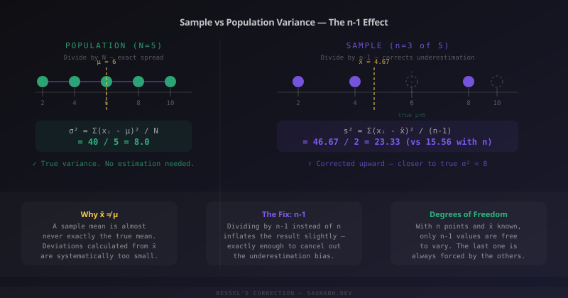

At some point every statistics student types np.var(data), then np.var(data, ddof=1), notices the numbers are different, and wonders what ddof=1 actually means and why it exists. The answer is one of those beautiful moments where a small formula change connects to a deep idea about what it means to estimate something you can never fully see.
Start With the Simplest Question
You want to know the average height of every person in India. You can't measure all 1.4 billion people. So you measure 100 of them — your sample — and use that to estimate the truth about the population.
That's statistics in one sentence: using a small window to make careful guesses about a big world you can't fully observe.
Variance is how we measure spread — how far data points are from the average. And when we compute variance from a sample, something subtle goes wrong if we're not careful.
The Intuition: Your Sample Mean Is Not the True Mean
Here's the key insight, stated plainly: when you take a sample, the sample mean (x̄) is almost never exactly equal to the true population mean (μ). It's always a little off — sometimes above, sometimes below.
Now think about what happens when you calculate variance. You measure how far each point is from the mean. But which mean are you using? You're using x̄ — your sample mean — not the real μ.
And here's the problem: your data points are naturally closer to their own sample mean than they are to the true population mean. The sample mean is literally defined as the center of your sample. So when you measure deviations from it, you're measuring the smallest possible deviations — artificially small ones.
Dividing those artificially small deviations by n gives you a variance that is systematically too low. It consistently underestimates how spread out the population truly is.

A Concrete Example
Suppose the true population is five numbers: 2, 4, 6, 8, 10. The true mean is 6. The true variance is:
population = [2, 4, 6, 8, 10]
true_mean = 6
deviations_squared = [(x - 6)**2 for x in population]
# = [16, 4, 0, 4, 16]
true_variance = sum(deviations_squared) / 5
# = 40 / 5 = 8.0Now suppose you only see three of those five values: 2, 4, 8. Your sample mean is (2+4+8)/3 = 4.67 — already off from the true mean of 6.
sample = [2, 4, 8]
sample_mean = sum(sample) / len(sample) # = 4.67
# Deviations from sample mean (not true mean!)
deviations_sq = [(x - sample_mean)**2 for x in sample]
# = [7.11, 0.44, 11.11]
# Sum = 18.67
# WRONG: divide by n
biased_variance = 18.67 / 3 # = 6.22 ← underestimates true 8.0
# RIGHT: divide by n-1
unbiased_variance = 18.67 / 2 # = 9.33 ← much closer to true 8.0The biased estimate (6.22) is further from the truth (8.0) than the corrected one (9.33). The n-1 correction isn't perfect for any single sample — but it is correct on average across many samples. That's what unbiased means in statistics: not that each estimate is right, but that the errors cancel out over repeated sampling.
The Degrees of Freedom Explanation
There's another way to understand this that some people find more satisfying. It's called degrees of freedom.
Suppose you have a sample of 3 numbers and you know the sample mean is 10. How many of those numbers are you free to choose?
You can pick the first one freely: say, 8. You can pick the second one freely: say, 12. But the third one? It's forced. If the mean must be 10, and you have 8 and 12 already, the third number must be 10. You have no freedom left.
With n data points and one constraint (the mean), you have n-1 degrees of freedom. When calculating variance, you're dividing by the number of truly independent pieces of information — and that's n-1, not n.
import numpy as np
data = [8, 12, 10] # mean = 10
# If mean is fixed at 10 and first two values are 8, 12:
# third value is forced: 3*10 - 8 - 12 = 10
# Only 2 values were "free" — that's n-1
print(np.var(data)) # biased: divides by n=3 → 2.67
print(np.var(data, ddof=1)) # unbiased: divides by n-1=2 → 4.00When Does It Matter?
For large samples, the difference between dividing by n and n-1 becomes negligible. If n = 1000, dividing by 999 vs 1000 is a 0.1% difference. Nobody cares.
But for small samples — n = 5, n = 10, n = 20 — the correction matters meaningfully. Medical trials, A/B tests with limited traffic, early-stage product experiments: these are exactly the contexts where you're working with small samples and the bias is real.
The extreme case makes it obvious: if n = 1, you have a single data point. Its deviation from itself is zero. Variance = 0. That's clearly wrong — one observation tells you nothing about population spread. With n-1, you'd divide by zero, which is Python's way of saying "you don't have enough information to estimate variance." That's the correct answer.
Proving It With Simulation
The cleanest way to understand why n-1 works is to simulate it — draw thousands of samples, compute variance both ways, and check which one averages to the true population variance.
import numpy as np
# True population: mean=50, std=10
population = np.random.normal(loc=50, scale=10, size=100_000)
true_var = np.var(population) # ≈ 100.0
biased_estimates = []
unbiased_estimates = []
for _ in range(10_000):
sample = np.random.choice(population, size=10, replace=False)
biased_estimates.append(np.var(sample)) # ddof=0
unbiased_estimates.append(np.var(sample, ddof=1)) # ddof=1
print(f"True variance: {true_var:.2f}")
print(f"Average biased estimate: {np.mean(biased_estimates):.2f}") # ≈ 90
print(f"Average unbiased estimate: {np.mean(unbiased_estimates):.2f}") # ≈ 100Run this and you'll see: the biased estimates average to roughly 90 when the truth is 100. The unbiased estimates (ddof=1) average right to 100. That's Bessel's correction doing its job across 10,000 trials.
The Name: Bessel's Correction
The fix is formally called Bessel's correction, named after Friedrich Bessel, a 19th-century German mathematician. It's one of those results that feels obvious in hindsight but took real mathematical insight to derive rigorously — the proof that E[s²] = σ² (the expected value of the sample variance equals the true population variance) requires working through the algebra of expectations carefully.
You don't need to follow every step of that proof to use the result correctly. But it's worth knowing the name, because "Bessel's correction" is what statisticians say when they mean "that's why it's n-1."
The One-Line Summary
Your sample mean is always a little wrong. That wrongness makes your deviations look smaller than they really are. Dividing by n-1 instead of n corrects for this — inflating the estimate just enough to make it accurate on average. The n-1 represents the degrees of freedom: how many data points are truly free to vary once you've fixed the mean.
Now you know what ddof=1 means — and more importantly, why.